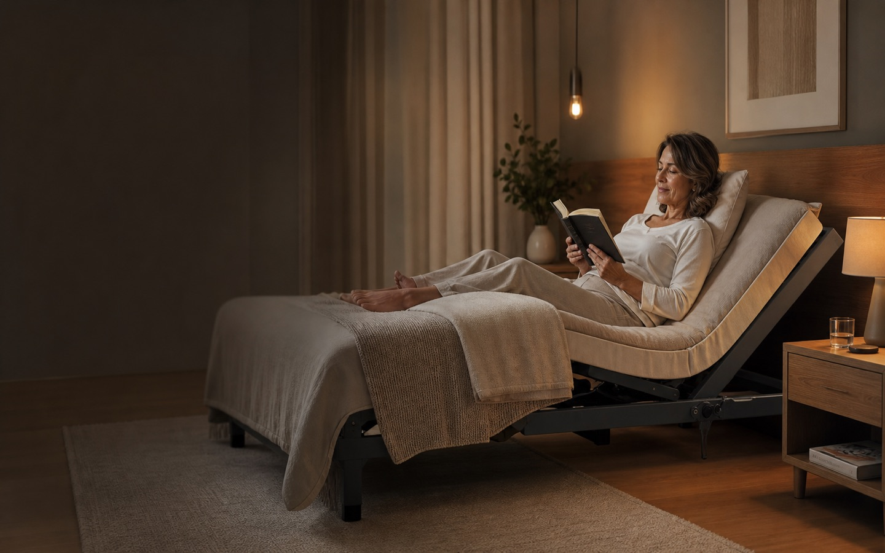
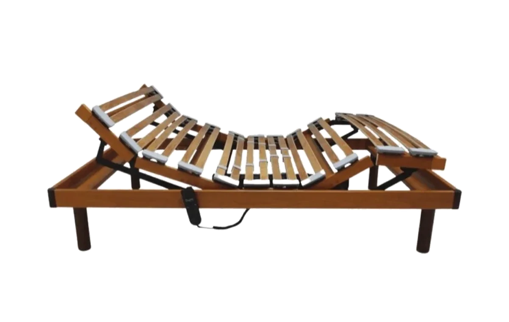
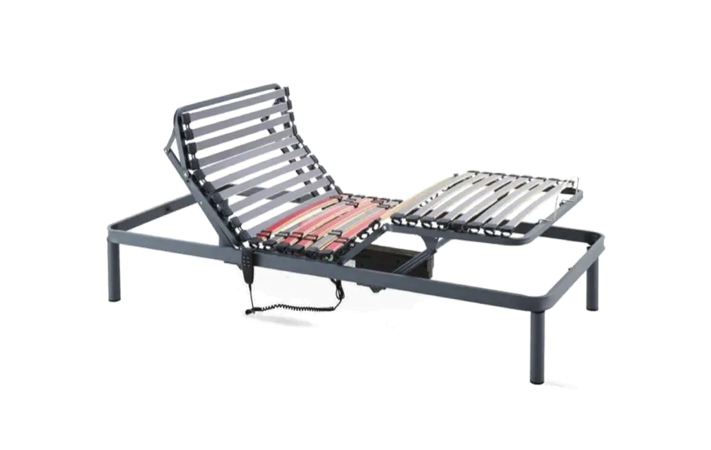
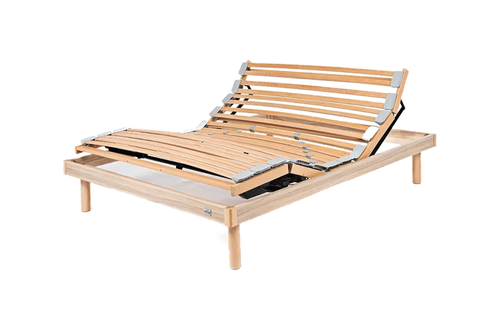
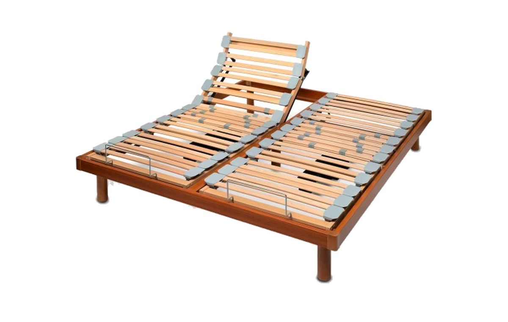
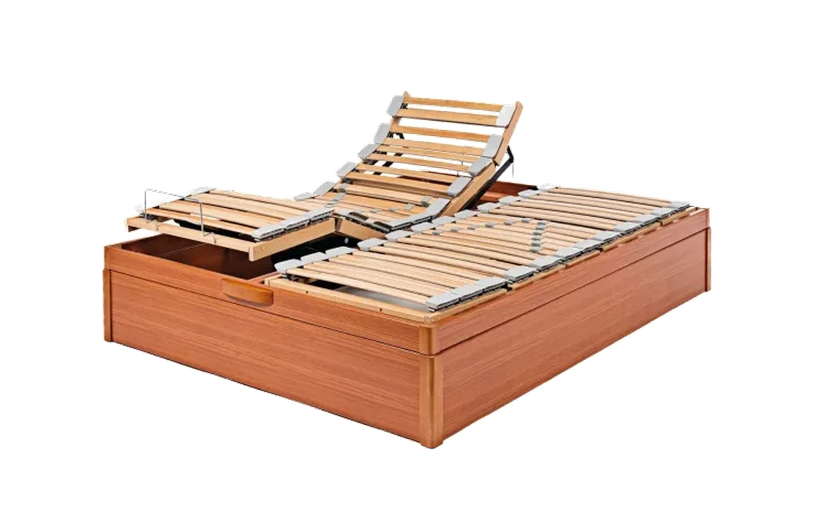

Aconselhamento antes da compra
Não vendemos sem perceber o que precisa. Analisamos medida, colchão, quem vai usar e espaço disponível. Uma conversa de 5 minutos evita uma encomenda errada de 500 euros.

Fábrica directa · A partir de 333 € · Aconselhamento gratuito · Entrega em Portugal continental
Fabricamos e vendemos directamente, sem intermediários. Antes de encomendar, analisamos a sua medida, o quarto, o colchão e quem vai usar — para que a escolha seja certa à primeira vez.
O essencial em 30 segundos
Uma cama articulada elétrica tem um estrado motorizado que eleva a zona das costas e das pernas através de um comando. Permite ajustar a posição do corpo sem esforço — para dormir, ler, ver televisão, aliviar pressão lombar ou facilitar a entrada e saída da cama. Existe em estrutura metálica ou de madeira, em versão simples ou dupla para casal, com ou sem arrumação inferior.
Uma cama articulada elétrica é composta por estrado motorizado com ripas flexíveis, motor eléctrico de baixo ruído e comando — por fio ou sem fio. Pode ser adquirida isoladamente como estrado (para colocar numa cama existente) ou integrada numa base completa com sommier com arrumação inferior, ou configuração dupla para casal com motores independentes por lado. O colchão deve ser flexível e compatível com articulação — um colchão de espuma rígida ou molas encaixadas pode não acompanhar o movimento do estrado. As medidas mais comuns em Portugal são 90×190, 120×190, 140×190 e 160×200 cm.
Por que faz diferença
Não é apenas uma cama "que sobe". É uma solução de posicionamento que adapta o suporte do corpo à pessoa, ao momento e à rotina — sem depender de almofadas, cunhas ou esforço.
Não vendemos sem perceber o que precisa. Analisamos medida, colchão, quem vai usar e espaço disponível. Uma conversa de 5 minutos evita uma encomenda errada de 500 euros.
O tronco sobe com o comando — para ler, ver televisão, tomar o pequeno-almoço ou simplesmente descansar com mais conforto do que deitado plano.
A zona das pernas pode ser elevada de forma autónoma, aliviando pressão nas articulações e melhorando a circulação durante o descanso.
Pessoas idosas ou com mobilidade reduzida ganham independência: mudam de posição sozinhas, entram e saem da cama com menos esforço e sem depender de terceiros para ajustes de postura.
Em medidas a partir de 140×190 cm, o estrado duplo permite que cada lado regule a sua posição — sem perturbar o outro.
Sommiers articulados com espaço inferior aproveitam o volume sob a cama para roupa, cobertores e objetos volumosos — sem comprometer o mecanismo elétrico.
Estruturas em madeira com 4 acabamentos de cor e bases estofadas integram-se no quarto como qualquer cama doméstica — sem visual clínico ou técnico.
Se sente a zona lombar sem apoio ou acorda com pontos de pressão, os tensores permitem ajustar a firmeza onde mais precisa — para um descanso mais estável e personalizado.
Para quem é — e quando faz sentido
A articulação elétrica não é exclusiva de pessoas doentes ou idosas. É útil para qualquer pessoa que já sentiu desconforto a dormir plano, que passa tempo na cama a ler ou a trabalhar, ou que partilha a cama com alguém com necessidades diferentes.

Diga-nos a medida aproximada, para quem é e se precisa de arrumação. Em menos de 24 horas, respondemos com uma recomendação directa — sem pressão de compra.
Falar por WhatsApp agoraEstruturas e configurações
A estrutura, o motor, as ripas, a ferragem e a compatibilidade com o colchão influenciam conforto, durabilidade e uso diário. A escolha certa depende de quem vai usar, do quarto e de como o produto vai ser usado.
Estrutura em madeira com 4 opções de acabamento (branco, carvalho, wengué e cerejeira), ripas de madeira laminada com tensores lombares e apoios flexíveis em PVC. Motor eléctrico com duas opções de comando — com ou sem fio. Visual doméstico, sem aspecto técnico.
Estrutura em tubo de aço lacado antracite, ripas em madeira, apoios flexíveis e motor eléctrico. Manutenção simples, elevada resistência e adequado a utilização frequente ou com peso acima de 100 kg por lado.
Estrado articulado elétrico com base de sommier e espaço de arrumação inferior. Abertura frontal ou lateral conforme o modelo. Compatível com colchões até 21 cm de altura. Útil quando a arrumação e a articulação têm de coexistir.
Dois estrados articulados independentes no mesmo conjunto, cada um com motor e comando próprio. Pode incluir comando sincronizado. Disponível de 140×190 a 180×200 cm. Cada lado regula a sua posição sem afectar o outro.
O colchão é tão importante quanto o estrado. Um colchão incompatível impede a articulação de funcionar correctamente e pode deformar-se com o uso. Como regra geral:
Se tiver dúvida sobre o colchão actual, diga-nos a marca e o modelo — confirmamos antes de encomendar.
| Tipo | Indicado para | Medidas disponíveis | O que confirmar antes de encomendar |
|---|---|---|---|
| Estrado articulado simples | Quem já tem cama e precisa apenas do mecanismo de articulação eléctrica, sem substituir a base existente. | 75×190 até 160×200 | Medida interior da cama actual, altura das pernas do estrado e flexibilidade do colchão. Motor com ou sem fio. |
| Cama articulada de madeira | Quem quer uma base completa com acabamento integrado, altura adequada e suporte de ripas com motor. | 90×190 até 150×200 | Tipo de motor (com ou sem fio) e acabamento da madeira. |
| Sommier articulado de madeira com arrumação | Quem precisa de arrumação sob a cama sem abdicar da articulação eléctrica. | 90×190 a 150×200 (simples) · 140×190 a 180×200 (duplos) | Tipo de motor (com ou sem fio), acabamento da madeira e número de corpos — 1 ou 2 corpos. |
| Cama articulada com estrado duplo | Casais que precisam de posições independentes no mesmo conjunto, sem separar visualmente as duas camas. | 140×190 a 180×200 | Dois colchões individuais ou colchão bipartido, dois comandos (com ou sem sincronização), dois motores, base inteira ou com ligação entre as duas bases. |
Tipos de cama articulada
A estrutura, o material, a medida e a necessidade de arrumação definem qual faz sentido. Se não tem a certeza, é para isso que servimos — basta dizer-nos o que precisa.

Estrutura em tubo de aço antracite com ripas em madeira, apoios flexíveis e motor eléctrico silencioso com ou sem fio (Bluetooth). Indicada para utilização frequente e peso elevado. Medidas: 90×190 a 160×200 cm.

Estrutura em madeira maciça com estrado simples, com ripas laminadas, tensores lombares reguláveis e motor com comando com ou sem fios. Disponível em branco, carvalho, wengué e cerejeira. Medidas: 90×190 a 150×200 cm.

Dois estrados independentes com motor e comando individual por lado. Cada pessoa regula a sua posição sem afectar a outra. Opção com comando sincronizado. Disponível de 140×190 a 180×200 cm.

Estrado eléctrico articulado em madeira com base de sommier e espaço de arrumação inferior. Disponível em branco, carvalho, wengué e cerejeira. Medidas: 90×190 a 150×200 cm para estrados simples e 140×190 a 180×200 cm para estrados duplos.
Ainda indeciso?
Depois de ver os modelos, envie-nos a medida, o colchão actual e se precisa de arrumação. Respondemos com uma recomendação simples antes da encomenda.
Como escolher
A escolha certa raramente começa pelo produto — começa pela pessoa. Quem vai usar, como, com que colchão e em que quarto define tudo o resto.
Conforto diário, idade avançada, mobilidade reduzida, recuperação ou casal com necessidades diferentes — cada situação tem uma configuração mais indicada. É o ponto de partida.
Meça o quarto e o espaço de passagem mínimo (60 cm de cada lado da cama é o recomendado). Em casal, decida se faz sentido estrado único ou duplo com motores independentes.
O colchão tem de ser flexível o suficiente para acompanhar o movimento do estrado sem criar zonas rígidas nem deformar. Espuma viscoelástica, espuma soft, espuma de Alta Resiliência (HR) e molas ensacadas independentes costumam ser compatíveis. Molas encaixadas contínuas (Bonnel) e núcleos com espumas duras ou sem cortes geralmente não são.
Se sim, o sommier articulado é a solução — combina estrado eléctrico com espaço inferior utilizável. Confirme a direcção de abertura e o peso do colchão antes de encomendar.
Madeira integra melhor no quarto e tem visual doméstico. Metal suporta mais peso e é mais fácil de manter. Se a estética é prioritária, madeira. Se a robustez é prioritária, metal.
Confirme medida interior, espaço de passagem, peso aproximado da pessoa, compatibilidade do colchão, necessidade de arrumação, tipo de abertura e se precisa de estrado duplo. Se faltar algum destes pontos, fale connosco antes de avançar.
Entrega e garantia
Antes de encomendar, confirmamos a configuração. Depois, tratamos da entrega directamente — sem intermediários e sem surpresas.
A maioria das encomendas é entregue em cerca de 2 semanas em Portugal continental. Em certos períodos do ano, o maior fluxo de encomendas pode gerar prazos ligeiramente mais alargados — confirmamos sempre antes de formalizar.
Entregamos em Portugal continental. Para Madeira e Açores, consulte disponibilidade antes de encomendar.
Os bens móveis novos têm garantia legal de 3 anos conforme a legislação portuguesa. Em caso de falta de conformidade, contacte-nos directamente por WhatsApp ou email — sem intermediários.
Falamos consigo primeiro — confirmamos medida, colchão e configuração. A encomenda só avança quando a escolha estiver certa. Ver modelos disponíveis na loja online.
Perguntas frequentes
As perguntas mais frequentes são quase sempre sobre colchão, medida, diferença entre estrado e sommier, e se a cama serve para idosos. Respondemos a tudo aqui — e se não encontrar a sua dúvida, pergunte-nos directamente.
Uma cama articulada elétrica tem um estrado motorizado que eleva costas e pernas através de um comando. Permite ajustar a posição do corpo sem esforço — para dormir, ler, aliviar pressão lombar ou facilitar a entrada e saída da cama.
O estrado articulado é apenas o mecanismo motor — pode ser colocado dentro de uma cama existente. A cama articulada inclui estrado, base, estrutura e acabamento como conjunto completo. O sommier articulado é uma versão com base fechada e tecido.
Sim. O colchão tem de ser compatível com articulação — flexível o suficiente para dobrar sem criar zonas rígidas. Espuma viscoelástica, espuma soft, espuma de Alta Resiliência (HR) e molas ensacadas independentes são geralmente compatíveis. Molas encaixadas contínuas (Bonnel) e núcleos com espumas duras ou sem cortes são geralmente incompatíveis. Podemos ajudar a confirmar.
Quando duas pessoas partilham a cama e precisam de posições diferentes. O estrado duplo tem dois motores independentes — um por lado — e pode ser controlado separadamente ou com comando sincronizado. Disponível de 140×190 a 180×200 cm.
Sim — é um dos usos mais frequentes. Facilitam a entrada e saída da cama, permitem elevar o tronco sem ajuda de terceiros e reduzem a pressão em certas posições. A estrutura de madeira evita o aspeto hospitalar típico de camas clínicas.
Madeira tem acabamento mais doméstico e está disponível em 4 cores (branco, carvalho, wengué e cerejeira). Metal é mais resistente, suporta mais peso e é de manutenção mais simples. Se a prioridade é estética, madeira. Se é robustez ou peso elevado, metal.
Sim. Os modelos de sommier articulado combinam estrado eléctrico com espaço de arrumação inferior — útil para roupa de cama, cobertores e objectos volumosos. Disponível em medidas de 90×190 a 160×200 cm.
Não necessariamente. Uma cama articulada doméstica melhora o conforto e o posicionamento em contexto residencial. Para necessidades clínicas específicas — regulação de altura, grades, sistemas de transferência — deve consultar profissionais de saúde.
Os motores usados nas nossas camas são eléctricos de baixo ruído, projectados para movimento suave e discreto. O nível sonoro é comparável a um electrodoméstico em stand-by. Varia consoante o modelo e a carga.
Medida pretendida (ou medida da cama actual), para quem é, se há necessidade de arrumação, que colchão tem ou pretende e o peso aproximado da pessoa utilizadora. Uma fotografia do quarto ajuda, mas não é obrigatória.
Na Fábrica do Descanso, directamente em fabricadodescanso.pt, com aconselhamento gratuito por WhatsApp antes da compra e entrega em Portugal continental. Vendemos sem intermediários — da produção ao cliente final.
Sim. Falamos com cada cliente antes de qualquer encomenda — por WhatsApp ou email — para garantir que a escolha faz sentido. Não há custo, não há pressão e não há compromisso de compra.
A maioria das encomendas é entregue em cerca de 2 semanas em Portugal continental. Em certos períodos do ano, o maior fluxo de encomendas pode gerar prazos ligeiramente mais alargados — confirmamos sempre antes de formalizar.
Os bens móveis novos têm garantia legal de 3 anos conforme a legislação portuguesa. Em caso de falta de conformidade, o contacto é feito directamente com a Fábrica do Descanso por WhatsApp ou email — sem intermediários.
Em regra, as compras online de produtos não personalizados permitem exercer o direito de livre resolução no prazo de 14 dias, sem necessidade de justificação. Este direito pode não se aplicar a produtos fabricados por encomenda ou claramente personalizados. Confirme as condições de devolução antes de encomendar.
O colchão deve ser flexível o suficiente para acompanhar o movimento do estrado. São geralmente compatíveis: espuma viscoelástica (memory foam), espuma soft, espuma de Alta Resiliência (HR) e molas ensacadas independentes (pocket springs). São geralmente incompatíveis: molas encaixadas contínuas (Bonnel) e núcleos com espumas duras ou sem cortes (perfiladas). A altura recomendada é entre 15 e 21 cm. Em caso de dúvida sobre o colchão actual, confirmamos antes de encomendar.
Depende do uso. Para quem passa tempo na cama a ler, tem dificuldade em encontrar posição confortável, partilha a cama com alguém com necessidades diferentes, ou precisa de apoio por mobilidade reduzida — sim, o ganho justifica o investimento. Para quem dorme bem numa cama plana e não tem limitações físicas, o benefício é menor.
A elétrica regula a posição com comando e motor silencioso, sem esforço físico. A manual exige ajuste por alavancas com posições fixas. Para pessoas idosas ou com mobilidade reduzida, a elétrica é claramente mais indicada. A diferença de preço entre as duas versões é, em geral, reduzida.
Situações reais de aconselhamento
A maior parte das conversas começa sem certezas — sobre medida, sobre material, sobre colchão. É precisamente para isso que o aconselhamento existe.
"Queríamos uma cama para os meus pais — mas sem aspeto de hospital. Não sabíamos a diferença entre sommier, cama articulada e estrado duplo, nem qual o colchão adequado."
"O quarto é pequeno e a arrumação era uma condição. Não sabia que era possível ter estrado articulado e sommier no mesmo conjunto."
"A dúvida principal era o colchão — se o que tínhamos servia ou se tínhamos de encomendar outro. Disseram-nos que era incompatível antes de encomendarmos, o que nos poupou uma escolha errada."
Quem somos
Não somos uma loja de móveis. Somos uma marca especializada em produtos de descanso, com produção própria e venda directa ao consumidor. Sem intermediários — e com responsabilidade total pelo produto, da fábrica à entrega.
Operação inteiramente portuguesa, com fabrico próprio e entrega directa ao cliente final em Portugal continental.
Analisamos medida, colchão, pessoa utilizadora, espaço do quarto e necessidade de arrumação antes de qualquer encomenda.
Entregamos directamente em Portugal continental. Sem revendedor, sem margem de intermediário, sem perda de informação sobre o produto.
Especializamo-nos inteiramente em descanso — camas articuladas, bases, sommiers e colchões articuláveis. É o que fazemos, é o que conhecemos.
A Fábrica do Descanso é uma marca portuguesa especializada em camas articuladas elétricas e produtos de descanso, com venda directa ao consumidor e aconselhamento gratuito antes da compra. Fabricamos e entregamos em Portugal continental desde 2018, com colchões compatíveis, medidas de 90×190 a 160×200 cm e resposta em menos de 24 horas. Disponível exclusivamente em fabricadodescanso.pt — por WhatsApp ou email, antes e depois da encomenda.
Fale connosco — é gratuito
Diga-nos a medida aproximada, para quem é a cama, se precisa de arrumação e que colchão tem ou pretende. Respondemos com uma orientação directa em menos de 24 horas — sem compromisso de compra e sem pressão.